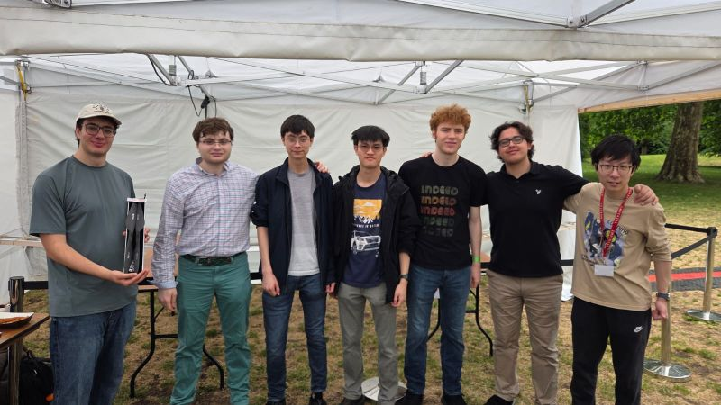
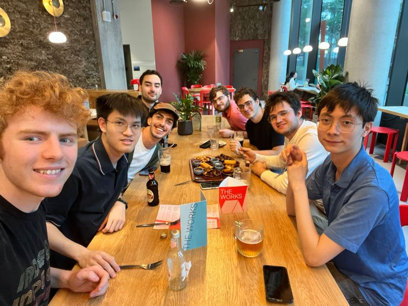

Aerodynamics
We model the wing and work to reduce the power needed to stay airborne.
The people behind the aircraft
We bring aerodynamics, structures, electronics and flight operations together in one student team.

At Imperial
We work on the whole aircraft: the shape of the wing, the structure inside it, the electronics on board and the checks before take-off.
Flight testing brings that work together. It gives us a chance to see how our designs perform and decide what to change next.
What we work on
We model the wing and work to reduce the power needed to stay airborne.
We design and build a lightweight airframe that can handle assembly, transport and flight.
We bring together the power system, sensors, telemetry and flight controls.
We prepare the aircraft, run ground checks and organise flight tests.
We take the aircraft to events and talk to visitors about what we’re building.
Away from the airfield
There’s time together outside the workshop too. Here we are after showing the aircraft at the Great Exhibition Road Festival.
Ask about joining
January 2026 · Flight-test crew
Get involved
Interested in joining the team, supporting a test or sharing your expertise? We’d like to hear from you.
Talk to us